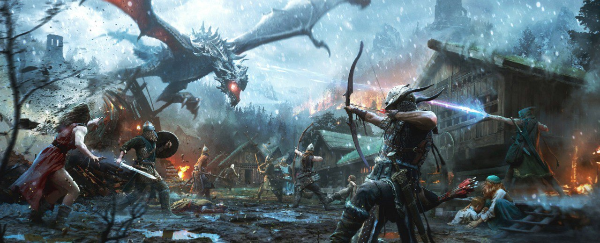
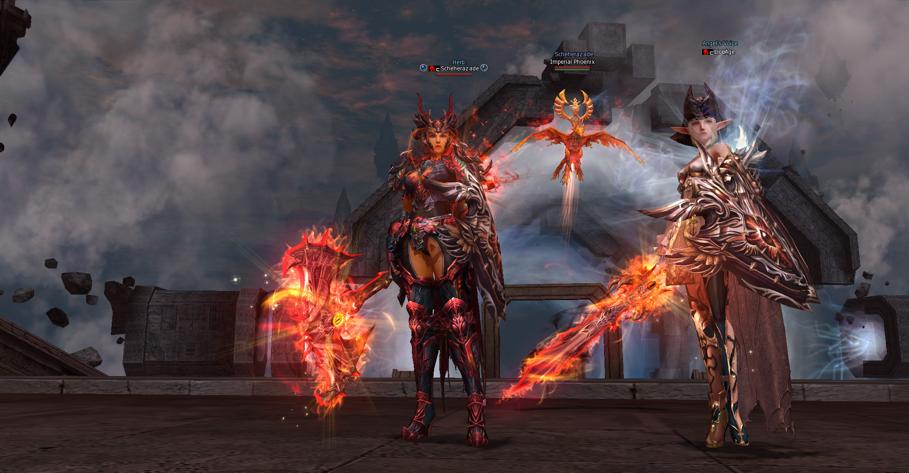
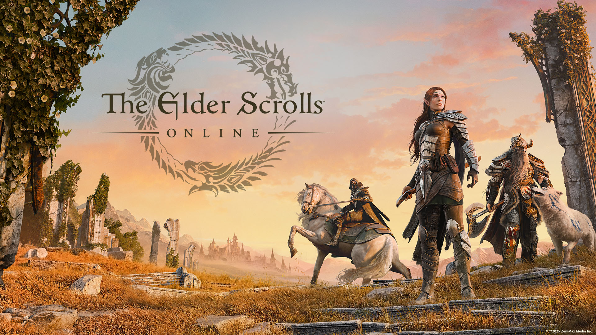

Sobre Mim
Olá! Meu nome é Kaherbert de Albuquerque Mesquita, e sou um entusiasta de tecnologia e eletrônica com uma paixão de longa data pela computação. Sou iniciante na área da programação, comecei nesse ano de 2025 o curso de Bacharelado em Engenharia de Software pela Uninter, onde busco aprofundar meus conhecimentos para construir uma carreira na área de TI.
Minha fascinação por tecnologia começou na infância, e hoje, como estudante, busco transformar essa paixão em minha profissão. Embora eu trabalhe atualmente como atendente em uma Relojoaria, dedico uma parte do meu tempo livre para os estudos de programação e desenvolvimento. Voltar aos estudos tem sido um desafio, ainda mais quando tenho que conciliar trabalho, estudo e lazer, mas a chance de construir uma carreira na área de TI me motiva a cada dia. Nos tempos livres gosto de ir para a academia e sair com meus amigos.
Hobbies
Meus hobbies são uma parte importante da minha vida, gosto de assistir a uma variedade de animes, filmes e séries. Também gosto bastante de fazer pequenos projetos("gambiarras") de eletrônica envolvendo solda e algumas modificações e reparos em meus próprios hardwares. Mas meu hobby preferido é o mundo dos games. Gosto de reunir meus amigos de longa data, para nos aventurarmos em algum jogo online e algumas vezes nos reunimos pessoalmente para diversões offline. Sou um grande fã do gênero RPG, em especial The Elder Scrolls V: Skyrim. Também me aventuro em MMORPGs como Lineage 2 e The Elder Scrolls Online. O Lineage 2 foi o meu primeiro contato com jogos online e através dele conheci várias pessoas incríveis que hoje são meus amigos.
-
The Elder Scrolls V: Skyrim
É meu RPG favorito de todos os tempos. O mundo aberto, e as infinitas possibilidades de missões e customizações me cativaram desde o primeiro contato com o game. O mundo de Skyrim me permite explorar diversas aventuras e viver "várias vidas" diferentes. Sem dúvidas é o melhor RPG já feito.
 -
Lineage 2: Amerika
Lineage 2 (L2) foi o meu primeiro contato com jogos online no ano de 2010 e foi o responsável por me apresentar a muitos dos meus amigos. Dependendo da crônica que se joga, pode chegar a ser um pouco complexo, mas a diversão com os amigos é sempre garantida. Atualmente jogo no servidor private L2 Amerika e o meu personagem se chama Scheherazade que é uma Phoenix Knight (classe Tank), meu objetivo no jogo é proteger os meus amigos e colegas de clã nas batalhas durante os eventos do game.
 -
The Elder Scrolls Online
Gosto de me aventurar neste MMORPG, que oferece uma forma diferente de explorar o universo de The Elder Scrolls com outros jogadores. As missões e o vasto mundo para explorar são incríveis. O jogo possui uma história incrível e bastante imersiva, é um jogo completo para todos os tipos de gameplays.
